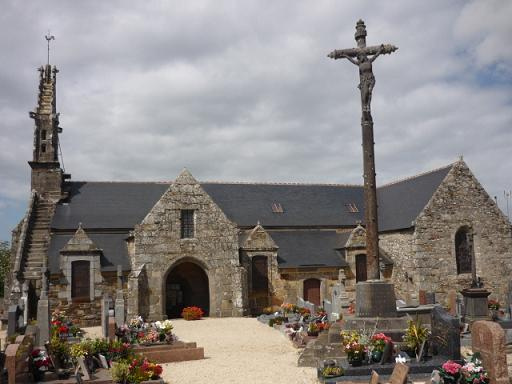

Me glev va dous o c'hwitellat
J'entends mon ami siffler
I hear my sweetheart whistle
Chant collecté par Théodore Hersart de La Villemarqué
dans le 1er Carnet de Keransquer (p. 293-294).

Mélodie
Arrangement Christian Souchon (c) 2015
|
A propos de la mélodie Inconnue. Elle est remplacée par "Son Anaig Rozmar" donné par H. Guillerm dans son recueil "Chants populaires bretons du Pays de Cornouailles" paru en 1905. La chanteuse n'est autre que Marguerite Philippe (1837-1909) de Pluzunet (Côtes d'Armor), la principale informatrice de F-M. Luzel, enregistrée par François Vallée le 27 septembre 1904 à l'Hôtel de France, pendant le congrès de Gourin. (Source: Site de P. Quentel, "Son ha ton", cf. liens). A propos du texte Ce chant qui situe l'action au Folgoët (20 km au nord de Brest) peut être rapproché d'une pièce collectée par Luzel à Duault (entre Guingamp et Carhaix), intitulée "Cloarec Rozmar" (le clerc Rosmar, Sonioù I, page 254). Le recueil de Duhamel ne donne pas de mélodie pour ce chant. On y retrouve, très peu modifiées, les strophes 1 et 2, puis 3 à 7. Comme le signale Luzel, le nom de Rozmar évoque une famille noble de Lannion. Le récit est plus étoffé: 27 distiques. Il n'est pas sûr que l'intrigue soit la même. Jeannette à qui ses parents ont refusé qu'elle épouse le clerc, se retrouve veuve d'un autre homme après trois mois de mariage. Elle court à la rencontre de son ancien amoureux, mais celui-ci ne daigne pas descendre de son cheval et la repousse (dialogue des poires et des pommes). Jeannette s'évanouit trois fois (c'est la dose prescrite dans les gwerzioù). Le clerc se radoucit et consent à épouser Jeannette, à qui il destinait une guirlande si elle n'avait pas été en deuil. Cette guirlande est tressée par les voisins, explique Luzel, pour se moquer d'une fille qui épouse un autre homme que son galant attitré (ou d'un jeune homme dans une situation semblable). Le clerc est décrit comme un personnage raffiné qui porte des gants, met de la muscade dans ses chaussures et de la lavande dans ses poches! Dans la version de La Villemarqué, on le voit attacher une grande importance à la tenue vestimentaire de son amie. Le clerc de Rosmar Un personnage portant ce nom à Plouzélambre se pendit faute d'avoir pu épouser la fameuse Charlézenn (fin 16ème siècle), nous dit Anatole Le Braz dans ses "Vieilles histoires du pays breton" (1893). Par ailleurs les "Sonioù", tome I, de F-M. Luzel renferment deux autres récits, le Clerc de Rozmar -2ème version", p.259 et le "Clerc de Quimper" où ledit clerc ne renonce pas à devenir prêtre: dans le premier cas, sa bonne amie, Françoise Le Rolland lui prédit qu'il mourra pendant sa première messe et sera alors uni à elle dans l'au-delà. Dans la seconde histoire, l'entrevue qu'il a avec la jeune fille de Kerourgan en Goëlo conduit cette dernière à réclamer sa bague et son mouchoir. On peut trouver que la narration minimaliste et apparemment décousue notée par La Villemarqué est la plus poétique. Je ne sais pas interpréter les mentions "v.p. (x)" après le titre "Zon jardin" et "Claude lejean revos" inscrite au crayon dans la marge droite, en regard du . ème vers. |
About the tunes Unknown. Replaced here with "Son Anaig Rozmar" published by H. Guillerm in his collection "Chants populaires bretons du Pays de Cornouailles" printed in 1905. The singer is the famous Marguerite Philippe (1837-1909) from Pluzunet (Côtes d'Armor), the main informant of F-M. Luzel, whose performance was recorded by François Vallée on 27th September 1904 at the Hotel de France at Gourin. (Source: the site of P. Quentel, "Son ha ton", see links). About the lyrics The present song locates the plot at Folgoët (20 km north of Brest) and should be paralleled with a piece collected by Luzel at Duault (between Guingamp and Caraix), titled "Cloarec Rozmar" (the Clerk of Rosmar, Sonioù I, page 254). Duhamel's collection mentions no tune for this song. Both songs have in common, with slight changes, stanzas 1 and 2, as well as stanzas 3 to 7 . As stated by Luzel, Rosmar is the name of a noble Lannion family. The narrative is more detailed than in the song at hand: 27 distiches. Whether the plot is the same in both cases is not sure. Jenny who was denied by her parents to marry her dear clerk, is widowed three months after her marriage with another man. She rushes to meet her former lover who does not vouchsafe to dismount from horse and turns her away (pears and apples dialogue). Jenny swoons three times (as is usual in the Breton laments). The clerk gets mollified and accepts to marry Jenny whose fickleness he intended to expose, if she had not been in mourning. To that end, so explains Luzel, people used to weave a garland to make fun of a girl who married another man than her regular fiancé (or of a young man in a similar situation). The clerk is portrayed as a dandy who wears gloves, carry nutmeg in his boots and lavender in his pockets! In La Villemarqué's version, he seems to despise his former fiancée, among others, because of her sloppy appearance. The clerc of Rosmar Someone referred to by this name at Plouzélambre hung himself, as he was not allowed to marry the famous Charlézenn (late 16th century), as stated by Anatole Le Braz in his "Old stories of the Breton country" (1893). Besides F-M. Luzel's "Sonioù", Part I, include two other narratives, "The Clerk of Rozmar - 2nd version", p.259 and the "Quimper Clerk", both featuring a clerk who does not give up the idea of becoming a priest: in the first story, his girl friend, Françoise Le Rolland, predicts that he will die during his first mass, so that they will join in marriage in the otherworld. In the second story, the clerk's interview with the Kerourgan-en-Goëlo girl prompts the latter to ask back for the ring and the handkerchief she gave him once. It appears that the laconic and seemingly desultory narrative recorded by La Villemarqué provides the song at hand with a sense of poetry which is missing in the other versions. I could not construe the mentions "v.p. (x)" following the title "Zon jardin" and "Claude lejean revos" pencilled in the right margin beside the second line. |
|
BREZHONEK p. 293 I 1. - Me glev va dous o c'hwitellat O leuskel an dour war e brat. Trei, trei, ladira, lalala Trei, trei, ladira, ladira, lala 2. Mil vat ra d'am c'halon klevet O c'hortoz an amzer da zonet. - ... II 3. - Va dous, va dous, va gortozit! C'hwi zo var varc'h, me zo war treid. 4. Me ho gwel aze pignet mat, C'hwi zo war varc'h, me zo war droad. 5. Me 'm-eus gwelet doc'h un amzer, Ouiec'h me gortoz 'n ho kenver. 6. Ouiec'h c'hwi tenn ho manegoù Evit klask pér hag avaloù. 7. Ouiec'h c'hwi tenn ho manegoù Evit klask pér em c'hodelloù. 8. - Pér, avaloù ho-peus bloñset. Hag ho yaouankiz 'peus kollet! p. 294 9. Bremañ, oc'h ken du, ken teñval, Hag an noz pa ne vez ket loar. 10. Evel pa vez noz, anez loar, N'hellan bout mui ho servicher. 11. Mar karet boud serret kloz Serret kloz dor ho jardinoù, 12. Serret kloz dor ho jardinoù, 'Pije ka(v)et pér hag avaloù. 13. 'Pije ka(v)et pér hag avaloù, Vit regaliñ hoc'h amourioù! - ... III 14. - Me wel va dous war dachenn ar Folgoat Hag hi ken ruz evel ar gwad. 15. Lakaet eo ganti ken dister: N'hellan mui bout he servicher. - 16. Pignet eo d'an nech, deuet eo d'an traoñ. - Allas, va dous, lakaet oc'h e kañv! Allas ha siwazh d'am c'halon! - Kanet gant Yann Morvan, saboter e Bannalek (42 bl.) |
TRADUCTION FRANCAISE p. 293 I 1. - J'entends mon bien-aimé siffler En répandant l'eau sur son pré. Trei, trei, ladira, lalala Trei, trei, ladira, ladira, lala 2. Que je suis aise de l'entendre. Le temps qui vient peut bien attendre. - ... II 3. - Mon cher, mon cher, attendez-moi! Vous montez un cheval! Moi pas! 4. Je vous vois, tout là-haut jugé, Et moi, je vais, en bas, à pied. 5. Il fut un temps, je m'en souviens: Vous régliez vos pas sur les miens. 6. Vous saviez retirer vos gants Pour chercher, inlassablement, 7. Dans mes poches pommes et poires Et les trouviez, veuillez me croire. 8. - Ces fruits, vous les avez gâtés. Et votre jeunesse a passé! p. 294 9. Vous voici aussi noire et sombre Qu'une nuit sans lune, qu'une ombre. 10. Nulle lumière en cette nuit, Je ne puis être votre ami. 11. Il ne tenait qu'à vous de bien Fermer l'entrée de vos jardins, 12. Les eussiez-vous barricadés, Pommes, poires, on eût trouvé. 13. Pomme ou poire, on eût eu de quoi Nourrir vos amours, croyez-moi! - ... III 14. - Ma douce au Folgoët à présent Est sur la place, rouge-sang, 15. Habillée misérablement: Qu'elle se cherche un autre amant! - 16. Il monte, puis il redescend: - Mais vous portez le deuil, vraiment! Hélas que mon cur est dolent! - Chanté par Jean Morvan, sabotier à Bannalec (42 ans) |
ENGLISH TRANSLATION p. 293 I 1. - I hear my sweetheart toot a reed: He pours forth water on his mead. Trei, trei, ladira, lalala Trei, trei, ladira, ladira, lala 2. It eases my heart: I felt glum While waiting for the time to come. - ... II 3. - My dear, my dear, wait for me please! You ride. I walk. O won't you cease? 4. I see you seated on your horse, I walk. Your demeanour is coarse! 5. There was a time, turned has the tide!, When I felt welcome to your side, 6. Then you would have put off your glove, Searched for pears and apples, my love. 7. Your glove you'd have put off, my dear, And searched my pocket for a pear. 8. - Pears, apples are all overripe. And from your face the youth is wiped! p. 294 9. You are as full of gloom and doom, As is the night without the moon. 10. A night without a light in sight, How could I be your loving knight? 11. Had you carefully closed the doors, The doors of those gardens of yours, 12. Had you kept them closed carefully, The pears and apples were plenty. 13. Plenty of apples and of pears! You were not taken unawares! - ... III 14. - I see the lass on Folgoët square With her ruddy face she is there, 15. Rigged out, as a dowdy sister! No I could not be her suitor! - 16. Yet, upstairs and downstairs running He cried: - Darling, you're in mourning! Alas! Your plight is heartbreaking! - Sung by Jean Morvan, clog-maker in Bannalec (aged 42) |

Quemperven près de Lannion, le berceau des Rosmar